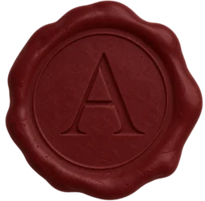
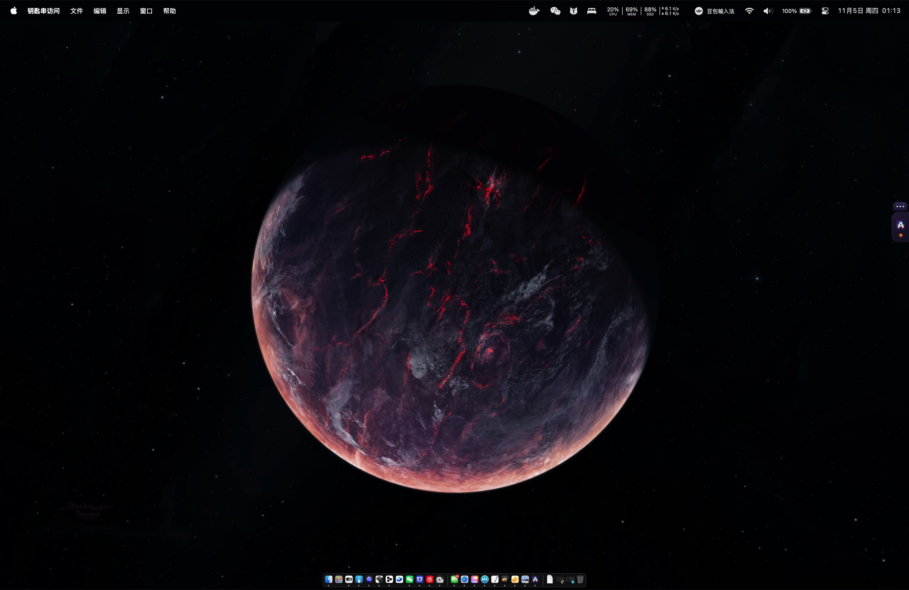
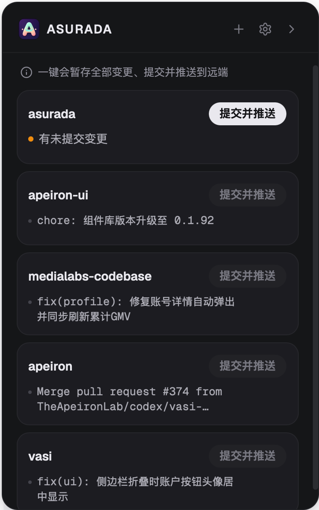

AI 写代码，
但你得看懂自己的项目
Asurada 的出发点是帮你滤掉噪音，提高你的 Review 效率，尤其是在多个项目之间穿插时，开发体验更加丝滑。
我相信未来 Agent 会自己写代码、自己审，然后自己交付一切。但当下我还需要认得它的每一处转折，直到双手离开键盘，完成角色转变的那天。
Apple Silicon 与 Intel

Asurada 的出发点是帮你滤掉噪音，提高你的 Review 效率，尤其是在多个项目之间穿插时，开发体验更加丝滑。
我相信未来 Agent 会自己写代码、自己审，然后自己交付一切。但当下我还需要认得它的每一处转折，直到双手离开键盘，完成角色转变的那天。
Apple Silicon 与 Intel


我们的出发点
Vibe Coding 让写代码快了十倍，可如果你不再看代码，项目就会慢慢变成一个你不认识的黑盒。出了问题时，你不知道该从哪里查；要做决定时，你不知道它现在长什么样。
更何况 AI 还会「自我加工」：悄悄塞进你预期之外的逻辑，比如过多的防御判断和兜底分支。今天看着无害，日后都会变成你理解代码的包袱。
Review，不是为了挑 AI 的错，
而是为了让你始终是最了解这个项目的人。
AI 一轮就能改几十个文件，逐行看完不现实，于是干脆不看。
测试、样板代码混在业务改动里，真正需要你把关的那几行反而被埋掉。
多个项目同时推进，AI 都在等你验收。每个项目的 Review 都该快进快出，别让「人」卡住整条流水线。
写提交信息、推送、处理冲突，Review 的专注力被一点点打散。
只看重点
一次改动里，真正需要你把关的往往只有那几个文件。Asurada 帮你把它们挑出来，其余的先收起，注意力只花在真正影响项目的地方。
怎么用
用你喜欢的 Agent 和编辑器
滤掉噪音，只看关键改动
提交信息自动生成
推送、冲突处理自动完成
所有项目一屏看完，有改动的排在最前面。Review 完点一下，剩下的杂事交给 Asurada。
feat: 新增深色模式平时只在屏幕边缘露出一个小标签，有待提交的改动时会亮起提示。在任何应用里按快捷键都能呼出面板。
免费、开源，MIT 协议。
—— Asurada 敬上
支持 Apple Silicon 与 Intel 的 Mac。在 Releases 中，Apple Silicon 下载 *_aarch64.dmg，Intel 下载 *_x64.dmg。请先安装 git 和任意一个 AI Agent（pi、Claude Code、Codex 等）。